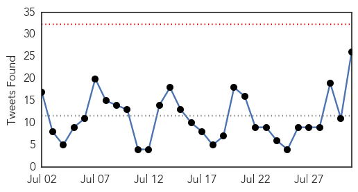
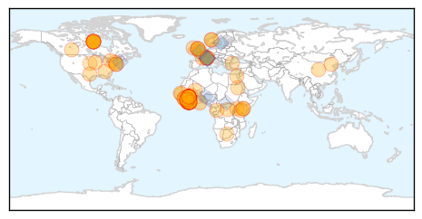
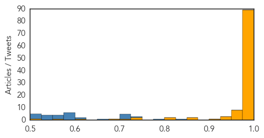

Ebola
30-Day Web Trend
2 alerts, 0 warnings

30-Day Twitter Trend
0 alerts, 0 warnings

Article Locations
Article Confidences
Top Articles:
- 1.000
- Ebola Vaccine 'Promising'
- 1.000
- Tests show new Ebola vaccine is 'highly effective'
- 1.000
- Experimental Ebola vaccine could stop virus in West Africa
- 1.000
- Ebola virus vaccine tested in Guinea is 'promising': study
- 1.000
- Tests show new Ebola vaccine is 'highly effective'
- 1.000
- Ebola Vaccine 'Promising'
- 1.000
- Ebola death in Sierra Leone leads to mass quarantine
- 1.000
- Breakthrough in quest for Ebola vaccine
- 1.000
- Ebola vaccine 'highly effective' in trials
- 1.000
- Ebola vaccine 'highly effective' in trials
- 1.000
- ‘I went out to Sierra Leone to make a difference to the Ebola crisis’, says PHE’s Neil Bentley
- 1.000
- Ebola virus vaccine tested in Guinea is 'promising': study
- 1.000
- Liberia president praises U.S. for Ebola help pledge
- 1.000
- ‘Highly Effective’ Ebola Vaccine Developed in Guinea
- 1.000
- Ebola cases not slowing in Guinea, Sierra Leone
- 1.000
- Ebola vaccine trial proves 100% successful in Guinea
- 1.000
- Africa - News and Analysis
- 0.999
- We Might Be on the Verge of an Ebola Vaccine That Works
- 0.999
- Ebola vaccine appears to be highly effective, could be ‘a game-changer’
- 0.999
- Experimental Ebola vaccine could stop virus in West Africa
- 0.999
- Ebola: UN emergency response mission winds down as WHO announces possible ‘game changer’ vaccine
- 0.999
- Norway-led team prove Ebola vaccine works
- 0.999
- Experimental Ebola Vaccine Tested in Guinea Shows Promise, Report Says
- 0.999
- A newly developed vaccine against the deadly Ebola virus is
- 0.999
- Sierra Leone faces Ebola setback; 500 under quarantine
- 0.999
- Ebola VSV-EBOV vaccine 'could be a game changer in the fight against deadly virus'
- 0.999
- Ebola vaccine from Winnipeg gives local African community hope
- 0.999
- Canadian vaccine breakthrough in Ebola fight
- 0.999
- Experimental Ebola vaccine could stop virus in West Africa
- 0.999
- Merck Ebola vaccine 100% efficacious in Phase 3 trials
- 0.999
- Ebola: Three questions about the killer virus
- 0.999
- Breakthrough in quest for Ebola vaccine
- 0.999
- Pilot Program Trains Health Workers for Post-Ebola
- 0.998
- UN Ebola emergency response mission winds down
- 0.998
- After Ebola criticisms, WHO plans for 4-month epidemic response
- 0.998
- Vaccine success holds hope for end to deadly scourge of Ebola
- 0.998
- Experimental Ebola vaccine achieves 100 per cent success in West African epidemic trial
- 0.998
- Ebola vaccine results 'hugely important' in tackling epidemic
- 0.998
- Ebola vaccine is 'potential game-changer'
- 0.998
- Breakthrough in quest for Ebola vaccine - Guinea
- 0.998
- Ebola vaccine trial yields potentially "game changing" results
- 0.998
- First Effective Vaccine Against Ebola Could Soon Be a Reality
- 0.998
- Africa - News and Analysis
- 0.997
- Merck's Ebola vaccine proves fully effective in Guinea trial
- 0.997
- Ebola vaccine from Canada seems to work in trial in Guinea: WHO
- 0.997
- A ‘ringing’ success: Ebola vaccine from Merck, Newlink 100% effective
- 0.997
- Ebola vaccine within reach as trial shows 100-per-cent effectiveness
- 0.997
- Ebola Vaccine Proven 100% Effective in African Trial
- 0.996
- Ebola vaccine success: Race is now on to protect those at risk
- 0.996
- New Ebola Vaccine Deemed ‘Highly Effective,’ Says WHO
Showing top 50 articles...
Top Tweets:
- 0.836
- RT: ECDC welcomes this progress and hopes it will help achieve zero cases in the current Ebola outbreak in West Africa https://t.c…
- 0.791
- Infographics: Timeline of Ebola virus disease progress in west Africa http://t.co/J6aSgN3mRr
- 0.750
- UN closes Ebola emergency mission - The Nation http://t.co/enAxFPSGsb ebola EVD
- 0.723
- Sierra Leone is in much better shape to deal with Ebola according to Ebola Crisis Manager Bintu Keita http://t.co/2TaqOHb6UW
- 0.715
- WHO's Dr Kieny on the Ebola vaccine preliminary results: “This record-breaking work marks a turning point in the history of health R&D”
- 0.713
- WHO: Trials show new Ebola vaccine is 'highly effective' - CNN http://t.co/dzordOs58h ebola EVD
- 0.711
- Kenya mulls granting refuge to chimps from Ebola-hit Liberia - Yahoo News UK http://t.co/UAFDgkRqsB ebola EVD
- 0.653
- Ebola vaccine trial success in Guinea could end epidemic – in pictures - The Guardian http://t.co/NLVEaWIssa ebola EVD
- 0.611
- 'Promising' results from Ebola vaccine trial - RTE.ie http://t.co/S1OltGv4Sp ebola EVD
- 0.592
- This is a very good news day. The Ebola vaccine developed at Canada's National Lab has been show to protect against infection.
- 0.591
- WHO Director-General Dr Margaret Chan on the Ebola vaccine preliminary results: “This is an extremely promising development”
- 0.586
- 70000+ children born during the Ebola outbreak in Liberia at risk of exclusion if not registered warns http://t.co/eq6LQVgJ0q
- 0.585
- The Ebola vaccine trial is being implemented by the Gov of Guinea WHO w/ support from many international partners.
- 0.582
- While the rest of the world welcomes Ebola vaccine initial findings continues to criticise. So how are the trials doing?
- 0.580
- Scientists Believe They May Have Found an Ebola Vaccine - U.S. News & World Report http://t.co/6oGbWZIuZd ebola EVD
- 0.569
- Patient Possibly Exposed to Ebola Was Monitored in Virginia - NBC4 Washington http://t.co/tFOa6AxRLY ebola EVD
- 0.568
- Liberia: Ebola Stalls Birth Registrations - New York Times http://t.co/3VAfP4arQc ebola EVD
- 0.551
- Once victim doctor shines light on Ebola crisis - Daily Journal http://t.co/dxMlRm0dQo ebola EVD
- 0.549
- RT: Are we closer to ending ebola with vaccine? @nighealthwatch htt…
- 0.549
- RT: Are we closer to ending ebola with vaccine? @nighealthwatch htt…
- 0.546
- Ebola vaccine trial proves 100% successful in Guinea - The Guardian http://t.co/zkxKxfa6EP ebola EVD
- 0.546
- Ebola vaccine trial proves 100% successful in Guinea - The Guardian http://t.co/V1ninwBCl4 ebola EVD
- 0.516
- Nigeria’s Polio infrastructure staff played crucial role in rapid response containment of Ebola virus importation into Lagos in 2014.
- 0.514
- Ebola Vaccine Success: AHF Says “World Must Proceed in All Due Haste and With ... - Business Wire... http://t.co/oVJJHDi0Rr ebola EVD
- 0.507
- Découvrez la prestation de Daouda Cisse troisième prix du concours de chant Africa Stop Ebola ! Merci à lui... http://t.co/sIYimIVpgW
- 0.502
- Promising results from Ebola vax trial. Potentially another tool to help protect people and stop Ebola. http://t.co/W0pQgxozVE